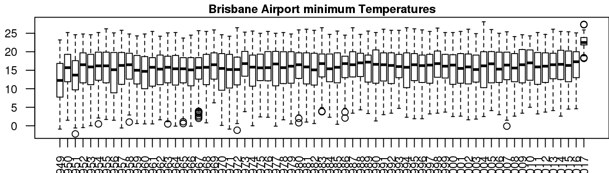

7.1 Boxplots
The boxplot is a widely used plot that can summarise the distribution of data within a collection. We routinely use boxplots to show a trend within data during.
Boxplots are for numeric data only:
boxplot(minTemp)Let’s add in the parameters to get a more sophisticated boxplot. It’s a good idea to include one parameter at a time to see the effects of the new parameter. We will explain what each of the parameters mean during the worshop. Only the last figure in the following worked example is shown.
boxplot(minTemp, las=2)
boxplot(minTemp,
las=2,
main="Brisbane Airport minimum Temperatures",
xlab="Year",
ylab="Degrees celsius")
We will explain what each of the following lines mean during the workshop:
years <- gsub("X","",colnames(minTemp))
years[seq(2,length(years),2)] <- NA
boxplot(minTemp,
las=2,
main="Brisbane Airport minimum Temperatures",
xlab="Year",
ylab="Degrees celsius",
cex.axis=0.7,
cex.main=0.8,
names=years)
abline(h=seq(0,25,5),lwd=1,lty=3,col='grey80')Let’s see if there are any seasonal trend in the data by plotting the temperature per season. To make this easier we will create a new variable called season that match each row in our minTemp dataset. We will explain what each of the following line means during the workshop.
months <- rownames(minTemp)
months <- substr(months,1,3)
months <- factor(months, levels=c('Jan','Feb','Mar','Apr','May','Jun',
'Jul','Aug','Sep','Oct','Nov','Dec'))
levels(months)## [1] "Jan" "Feb" "Mar" "Apr" "May" "Jun" "Jul" "Aug" "Sep" "Oct" "Nov"
## [12] "Dec"seasons <- months
levels(seasons) <- c(rep('Summer',2), rep('Autumn',3),
rep('Winter',3), rep('Spring',3), 'Summer')
levels(seasons)## [1] "Summer" "Autumn" "Winter" "Spring"table(months,seasons)## seasons
## months Summer Autumn Winter Spring
## Jan 31 0 0 0
## Feb 29 0 0 0
## Mar 0 31 0 0
## Apr 0 30 0 0
## May 0 31 0 0
## Jun 0 0 30 0
## Jul 0 0 31 0
## Aug 0 0 31 0
## Sep 0 0 0 30
## Oct 0 0 0 31
## Nov 0 0 0 30
## Dec 31 0 0 0We can use a for loop to create separate plots for each season. To have all plots appear on one use the par(mfrow) function to specify a canvas with 1 row and 3 columns.
Other properties:
mar=c(8,4,4,1)- is to specify the margins surrounding the plot: (bottom,left,top,right)cex.main,cex.lab,cex.axis- affects the font sizetitle()gives finer control for thexlab,ylab,main, using thelineparameter, you can adjust the location of the labels close to or away from the borders of the plot
season.col <- list(Summer='red',Autumn='orange',Winter='skyblue',Spring='green')
years[-c(1,length(years))] <- NA
par(mfrow=c(1,4),mar=c(4,2,2,2))
for(season in levels(seasons)) {
keep.rows <- seasons == season
season.temp <- minTemp[keep.rows,]
boxplot(season.temp, las=2, col=season.col[[season]],
names=years, border='grey85', main=season)
}The above plot show there is no particular seasonal trend in minimum temperature. This of course does not seem right logically. Closer attention will reveal that the y-axis are different for each plot, this can lead to mis-interpretation if the reader is not paying close attention. It is better to keep the y-axis the same across comparative figures. You can specify this using the ylim parameter.
par(mfrow=c(1,4),mar=c(4,2,2,2))
for(season in levels(seasons)) {
keep.rows <- seasons == season
season.temp <- minTemp[keep.rows,]
boxplot(season.temp, las=2, col=season.col[[season]],
names=years, border='grey85', main=season, ylim=c(0,30))
}Now it is clearer that there is differences in the sepal and petal length/widths across the different species.
Monthly trend
If you are ahead, how about using the months variable to create monthly plots and see if there is any trend.
Hint: use par(mfrow=c(4,3)) to create a 4 by 3 matrix of plots.
Expected output
For more information on other graphical parameters, look up par which will show you the list of parameters that can be set for plotting.